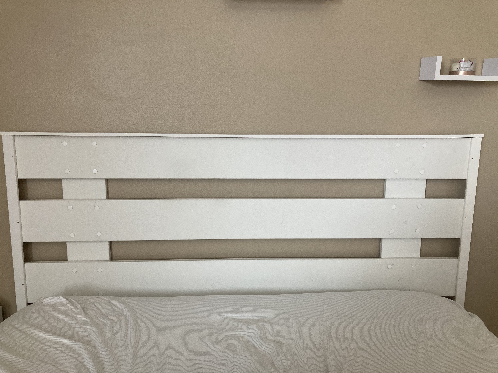

In my free time, my favorite thing to do is craft. This can range from the simplest doodle or drawing, to a more time-intensive project. I am a generally creative person, so having the opportunity to use crafting as a creative outlet has been extremely enjoyable. Over the summer, I created my own headboard from scratch! I moved into a new apartment, and I wanted to make a stylish headboard for under $50.00. I went to Menards, and picked up all the materials myself. I used a saw, screwdriver, hammer, nails, sand paper, and wood glue to create my headboard. It took me a while to complete this project, but I am extremely proud of the way it turned out. Here's what it looks like.
I also like taking on smaller projects around my apartment. I created flower garlands for my room, painted signs around the living room and kitchen, and I've taken up bullet journaling. I believe that in order to live a successful and healthy life, one must find balance. I balance my technical, aviation-based major with fun creative projects.
To return to the main index page, click here:
To jump to my class page, click here:
To jump to my major page, click here: